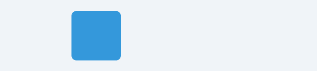

HaoTian · 2024-10-27 13:35:09
Motion One 是由 Motion Division 开发的一个开源 JavaScript 动画库，它基于 Web Animations API，提供了一种简单而强大的方式来创建平滑且响应式的动画效果。这个库特别适合那些希望在网页或应用中实现流畅交互体验的开发者。
为什么推荐 Motion One?
Motion One 提供了接近原生浏览器 API 的性能，同时保持用户友好的接口。animate 函数仅 3.8kb，远小于同类产品如 GSAP。Motion One 使用硬件加速动画，因此即使复杂动画，也能提供高性能。安装
要开始使用 Motion One，首先需要通过 npm 安装：
npm install motion
或者使用 CDN 引入。
入门示例
然后，你可以创建一个简单的 HTML 文件来引入 Motion One，并编写你的首个动画：
<!DOCTYPE html>
<html lang="en">
<head>
<meta charset="UTF-8" />
<meta name="viewport" content="width=device-width, initial-scale=1.0" />
<title>Motion 示例</title>
<script src="https://cdn.jsdelivr.net/npm/motion@10.16.2/dist/motion.min.js"></script>
</head>
<body>
<div id="box"></div>
<div id="controls">
<button id="moveButton">移动</button>
</div>
<script>
const box = document.getElementById("box");
const moveButton = document.getElementById("moveButton");
moveButton.addEventListener("click", () => {
// 将 motion.animate 改为 Motion.animate
Motion.animate(box, { x: 300 }, { duration: 1, easing: "ease-in-out" });
});
</script>
</body>
</html>
这段代码将在页面加载后对 id 为 app 的元素执行元素移动的动画。
